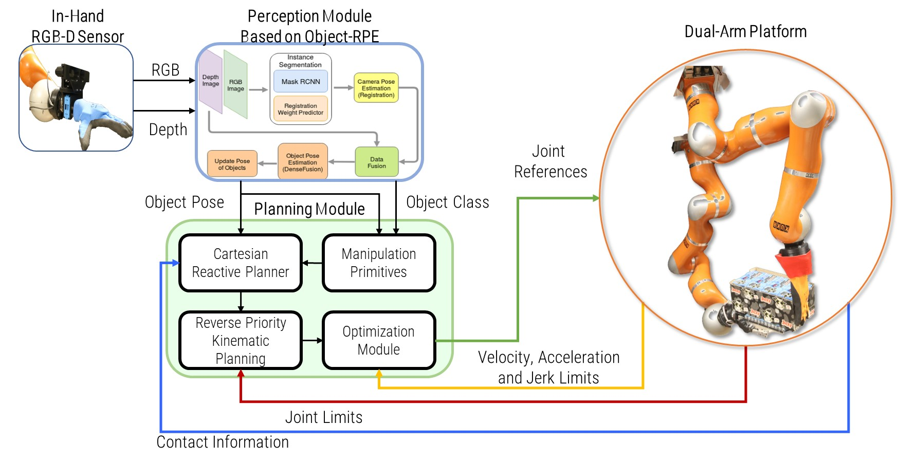
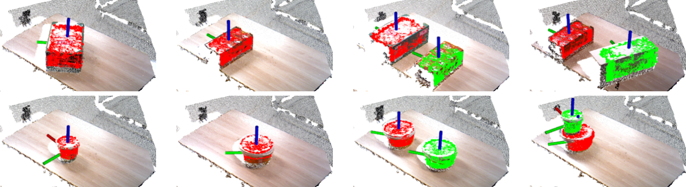
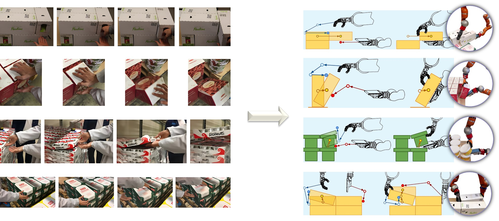
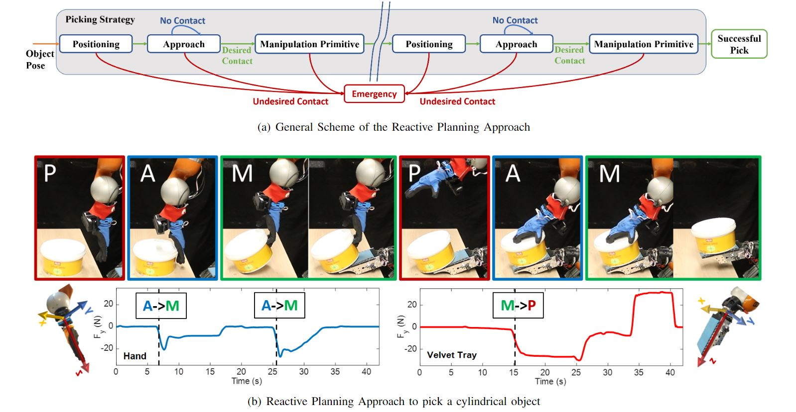
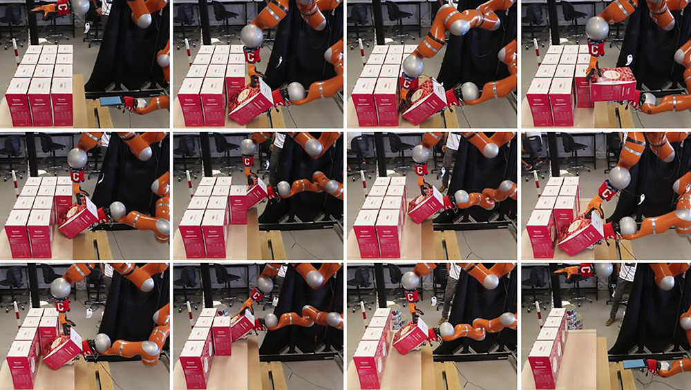
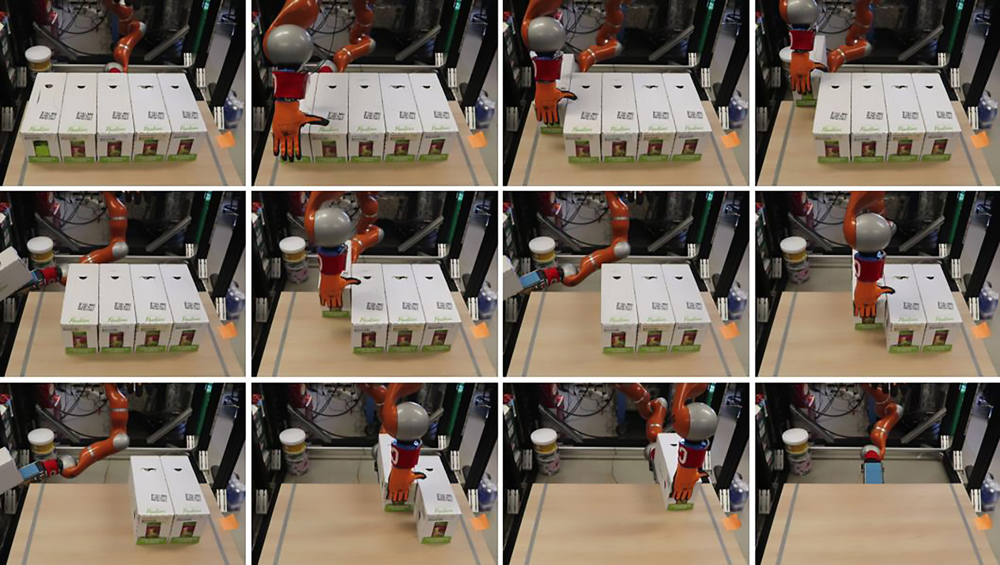
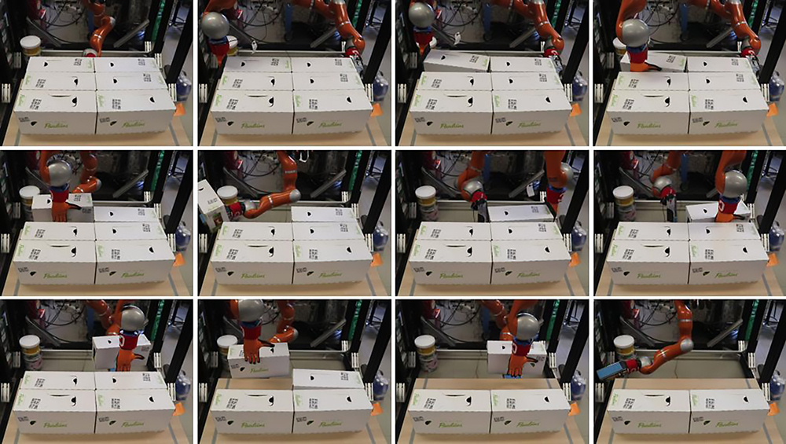
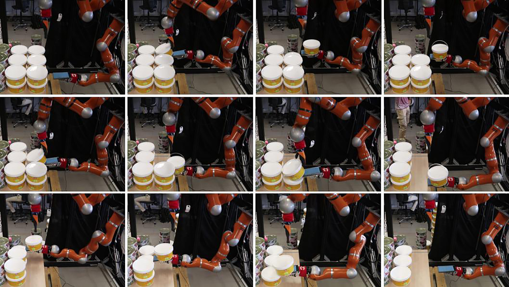

Block scheme of the integrated system. The pose of the object estimated by the perception system is the input of the planning module that generates a suitable picking strategy, accordingly to pre-defined manipulation primitives taking into consideration the dimensions, the shape, and the pose of the target object. The reactive planner algorithm is used to adapt and re-plan online the Cartesian trajectory based on contact information from force torque sensors at the end-effectors

The output of the perception algorithm is shown overlaid on the point cloud of the scene. In the top row results for cuboid objects are displayed. From left to right: single green box, single brown box, a green box and a brown box in a loosely-packed configuration, a brown box and a white box in a loosely-packed configuration. In the bottom row results for cylinders are displayed. From left to right: single green bucket, single yellow bucket, two yellow buckets in a loosely-packed configuration, green bucket stacked over a yellow bucket in a tightly-packed configuration.

By observing expert operators, we identified four main maneuvers they commonly adopt to pick boxes and cylinder in warehouses. These maneuvers have been encoded into four parametric motion primitives used to plan the motion of the robot during the task execution.

The figure shows the schematic approach used to implement the reactive motion planner (a), and a practical implementation for a picking task (b). The conceptual scheme is used to represent the state machine approach, where the picking strategy is decomposed in a set of states each planned online. An example of this approach is represented in the bottom figure (b), where the picking strategy is decomposed in 6 states. When a contact between the hand and the bucket is detected (the force exceeds a given threshold), a transition from Approach (A) to Manipulation (M), (A to M), is triggered.

WRAPP-up picking thin boxes using the horizontal rotation strategy.

WRAPP-up picking thick boxes using the sliding primitive.

WRAPP-up picking thick boxes using the vertical rotation primitive.

WRAPP-up picking cylindrical objects.